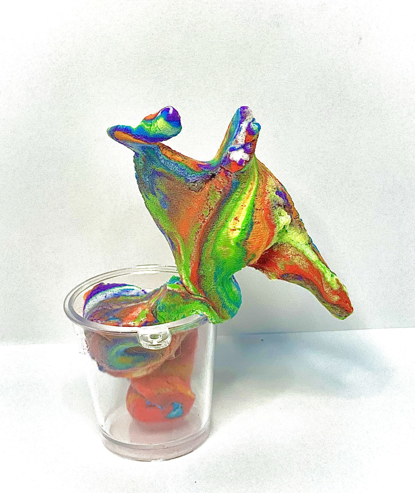
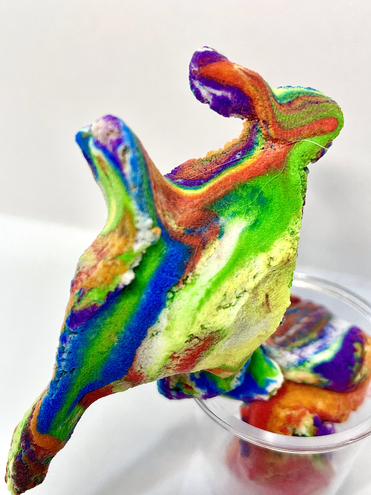
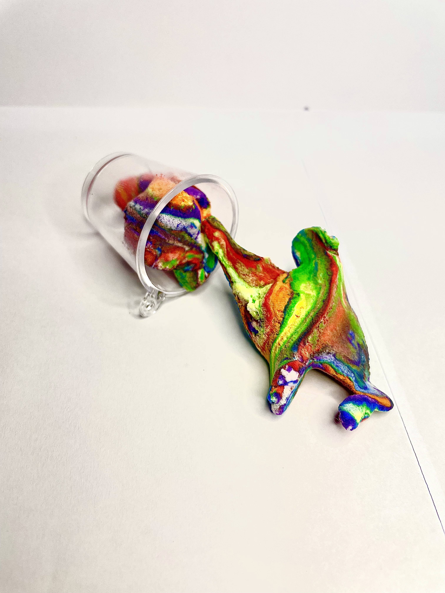
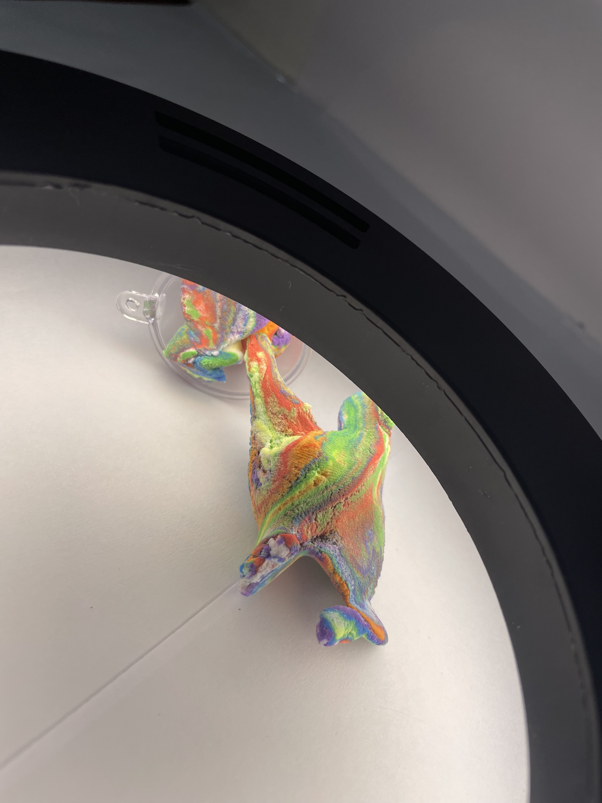

奶昔超人
複合媒材與立體作品

Info
類型｜ 複合媒材雕塑 媒材｜ 輕黏土
Concept
本作品的靈感來自一次意外的失敗實驗。原先嘗試製作彩虹奶昔，但在過程中未能成功完成預期的成果。 然而，在重新混合與塑形的過程中，意外產生了具有生命感的形體。
作品呈現出介於食物與生物之間的曖昧狀態，彷彿一種短暫存在的生命體。 我將其想像為「奶昔超人」，一種擁有可變形能力的存在，可以被塑造、改變，甚至重新定義其樣貌與意義。
然而，這樣的生命並不穩定，也無法長久存在，最終仍會回到原本的物質狀態。 透過這件作品，我試圖表達「生成」、「變化」與「短暫存在」之間的關係。



